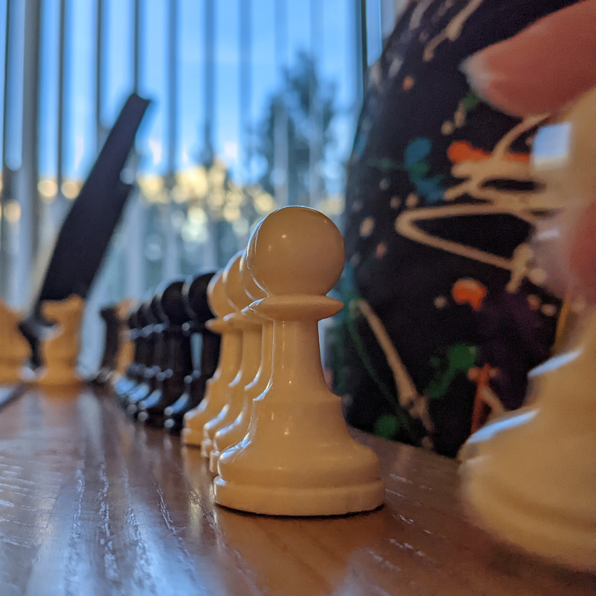

General Info
I'm Lydia! I'm a senior at the University of Montana. I'm going to be graduating in the Summer of 2022 with a BA in Psychology and a Minor in Ethics. In my free time I play video games, watch TV, and spend time with my friends and family. I plan on getting an Master's Degree in Counseling to later become a licenced counselor.

Science Education
My Freshman year of college, I studied pre-nursing. I've always been interested in science. The classes I took have helped to inform the lens I view everything with. Science is all around us. Although psychology largey focuses on social inetractions, science and brain chemistry is at it's core. Being able to study humans has been the most interesting part of my education.

Fun Stuff
Although space seems to be distinct from the rest of my life, it does come up on a daily basis. Watching Star Trek, star gazing, and spending time with my cousin (who's middle name is Jupiter) all remind me of our vast galaxy. It's easy to forget about everything happening out there when we're on our own little rock. Regardless of if you're thinking about Earth or about a nebula billions of miles away, space is relevant. That immense reach is why I think space is so cool!
